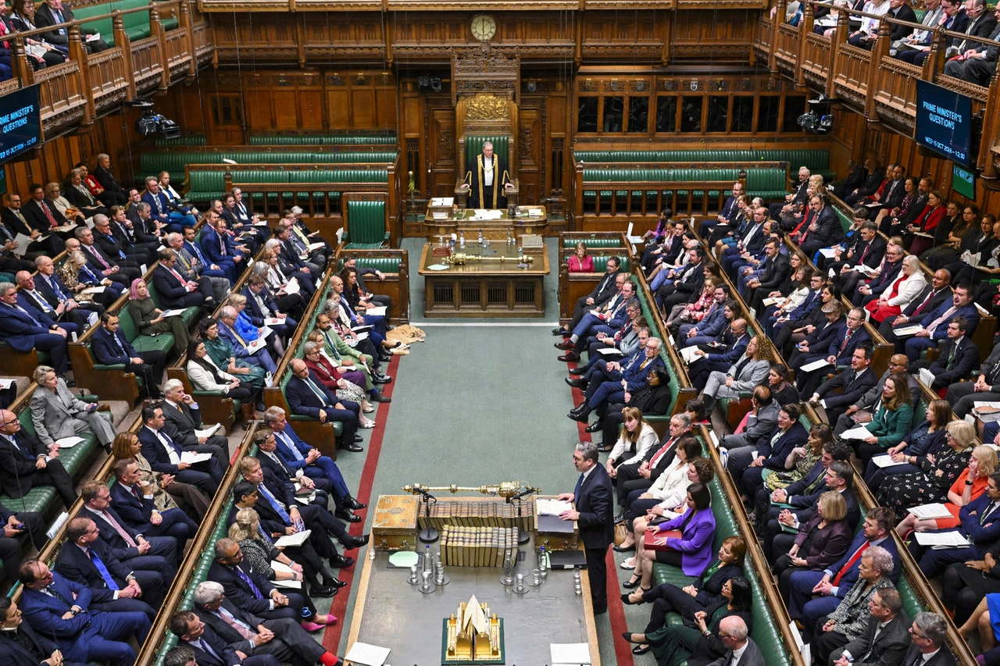

Question Time (or Question Period) is a parliamentary procedure in which members of a legislature put questions to government ministers, who are obliged to answer. It is a hallmark of the Westminster system and a central instrument of executive accountability to the legislature.
In the Parliament of the United Kingdom, each government department answers oral questions in the House of Commons on a rota. The best-known session is Prime Minister's Questions (PMQs), held at noon each Wednesday for thirty minutes, in which the Prime Minister answers questions, including six from the Leader of the Opposition. Sessions are known for their theatrical, adversarial style.
Question periods exist in Canada, Australia (where Question Time in the House of Representatives is a fixture of the sitting day), New Zealand, India, and in the European Parliament, which holds a "Question Hour" with the Commission and Council. Procedures differ: some parliaments require questions to be submitted in advance, while others allow unscripted supplementaries.
Supporters see Question Time as a vital mechanism of responsible government, forcing ministers to master their briefs publicly. Critics argue that in adversarial parliaments it often degenerates into point-scoring, with planted questions from government backbenchers and evasive answers.